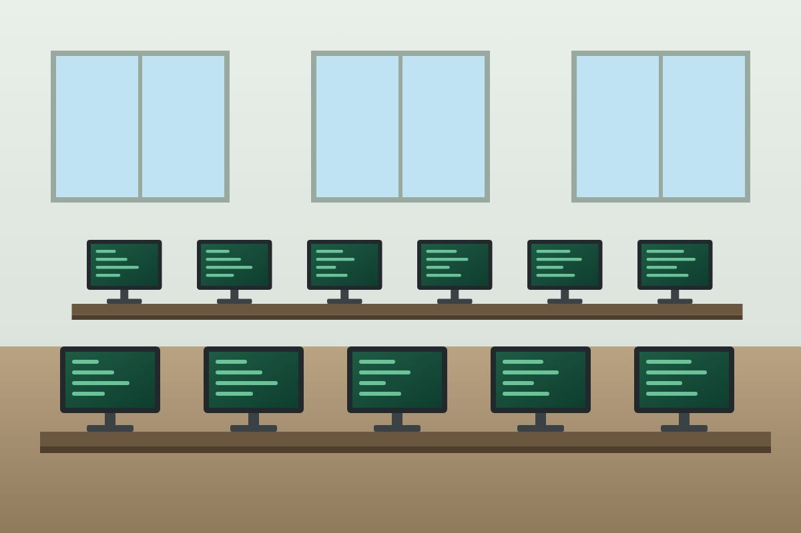

Instituto Raízes Digitais
Tecnologia que transforma futuros
Quem somos
O Instituto Raízes Digitais (IRD) é uma associação sem fins lucrativos que oferece educação gratuita em programação, desenvolvimento de sistemas e inteligência artificial para jovens a partir de 16 anos e adultos. Começamos em 2019, com aulas aos sábados em uma sala emprestada, e hoje mantemos turmas presenciais e online.

Missão, visão e valores
Missão
Democratizar o acesso à educação em tecnologia, preparando pessoas para o mercado digital e para o uso consciente da inteligência artificial.
Visão
Ser referência regional em formação tecnológica gratuita.
Valores
- Acesso para todos
- Pensamento crítico
- Ética na tecnologia
- Aprender fazendo
- Diversidade
- Transparência
Números de impacto
- 1.200 alunos formados desde 2019
- 38% conseguiram emprego ou estágio na área
- 45% dos alunos são mulheres
- 60 voluntários ativos
- 150 computadores recondicionados e doados
- 12 empresas parceiras
Como apoiar
Seja voluntário
Dê aulas, faça mentoria ou revise projetos, a partir de 2 horas por semana.
Seja doador
Contribua com valor mensal ou pontual, ou doe computadores usados.
Seja parceiro
Empresas podem patrocinar turmas e oferecer vagas de estágio.